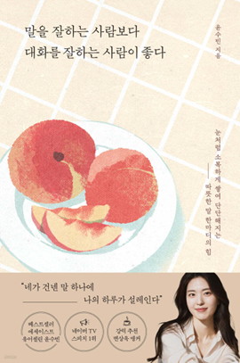

학습 목표
- 1. 신입사원들은 상하관계에서도 위축되지 않고 상황에 맞는 말하기 태도를 형성합니다.
- 2. 초·중간 관리자들은 팀원에게 동기부여와 신뢰를 주는 피드백 말하기 방식을 체득합니다.
- 3. 교육담당자 혹은 HR담당자 들은 조직 내 커뮤니케이션 갈등 예방을 위한 실전 교육 콘텐츠로 활용이 가능합니다.
- 4. 고객응대 CS직군에서도 감정 자극을 줄이면서 고객 불만을 완화하는 응대 언어를 습득할 수 있습니다.
- 5. 영업·협업포지션에 있는 직장인도 상대를 설득하면서도 관계를 해치지 않는 커뮤니케이션 스킬을 강화할 수 있습니다.
교육 특징
-
1. 보이는 라디오 형식으로 공감력 있는 전달
'보이는 라디오' 형식을 활용해 직장 내 실제 갈등 및 대화 사례를 제시하며, 학습자가 현실적으로 공감하고 스스로를 진단할 수 있도록 구성
-
2. AI기술을 활용한 실감형 사례 영상 제공
AI로 재현된 상황 영상을 통해 말 한마디가 형성하는 분위기와 관계를 학습자가 **'제 3자 시선'**으로 보고 느낄 수 있게 구성
-
3. 힐링과 실용을 동시에 담은 소통 교육
감정을 어루만지는 힐링 음악과 함께, ‘어떤 말이 관계를 살리고, 어떤 말이 상처를 남기는 가’에 대해 구체적인 커뮤니케이션 이론과 실천 팁을 제공
교육 대상
- 1. 신입사원 및 사회 초년생
- 2. 초·중간 관리자급 직장인
- 3. 교육 담당자 혹은 HR담당자(기업 내 교육용 활용 목적)
강의 목차
- 제1장 회사에서 사랑받는 사람의 특징
- 제2장 후배에게 존경받는 사람의 비밀
- 제3장 일이 아니라 사람이 힘들다면
- 제4장 직장인 필수 대화법
- 제5장 나는 왜 나에게 상처를 줄까? (능력에 대한 불안, 자존감 하락)
- 제6장 여유가 없어서는 핑계고 (시간에 대한 조급함,선택불안)
- 제7장 다정함은 체력에서 나온다 (번아웃, 관계 스트레스)
- 제8장 어른에게도 어른이 필요하다 (인정욕구, 비교중독)
강사 소개
강사명
윤수빈
경력
‘말을 잘하는 사람보다 대화를 잘하는 사람이 좋다’ 외 2권 저자
뉴온스피치 대표
네이버TV 스피치 1위
인스타그램, 유튜브, 네이버TV, 블로그 브런치, 틱톡 등 도합 20만 인플루언서
뉴온스피치 대표
네이버TV 스피치 1위
인스타그램, 유튜브, 네이버TV, 블로그 브런치, 틱톡 등 도합 20만 인플루언서
참고 도서

도서명
말을 잘하는 사람보다 대화를 잘하는 사람이 좋다
저자명
윤수빈
도서소개
이 책은 말의 기술보다 '말의 태도'가 대화 능력의 핵심이라고 강조하며, 말을 잘하는 사람보다 대화를
잘하는 사람이 되는 법에 주목합니다. 작고 사소한 다정한 말 한마디가 상처를 치유하고, 관점을 바꾸며, 일과 관계, 인생에 깊이를 더하는 힘을
보여줍니다. 독자가 곁에 두고 싶은 사람이 되어 삶의 행복을 키우는 44가지 다정한 말 습관을 제시합니다.